PROVINCE OF ILOILO
Home
History
Things to do
Policies
Iloilo Provincial Profile
Memorandums
Advisories
Sangguniang Panlalawigan Ordinances
Services
Officials
Governor Arthur R. Defensor Jr.
Vice Governor Christine S. Garin
SP Officials
Executive Officials
Contact
OUR ILOILO VACATION PACKAGES
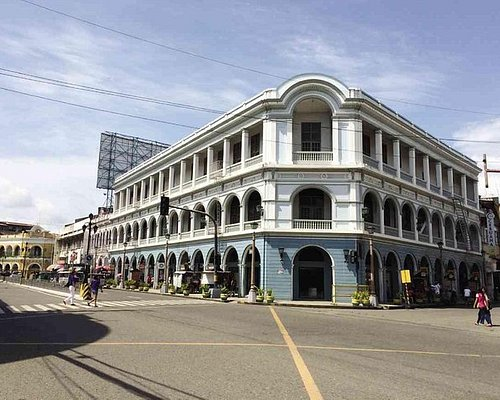
Top Picks
DAY TOUR
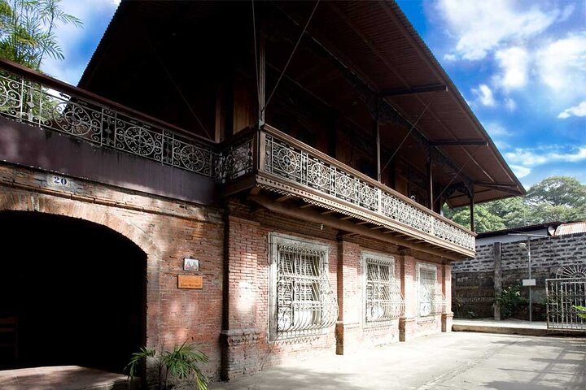
Day Trip & Travel
DAY TOUR
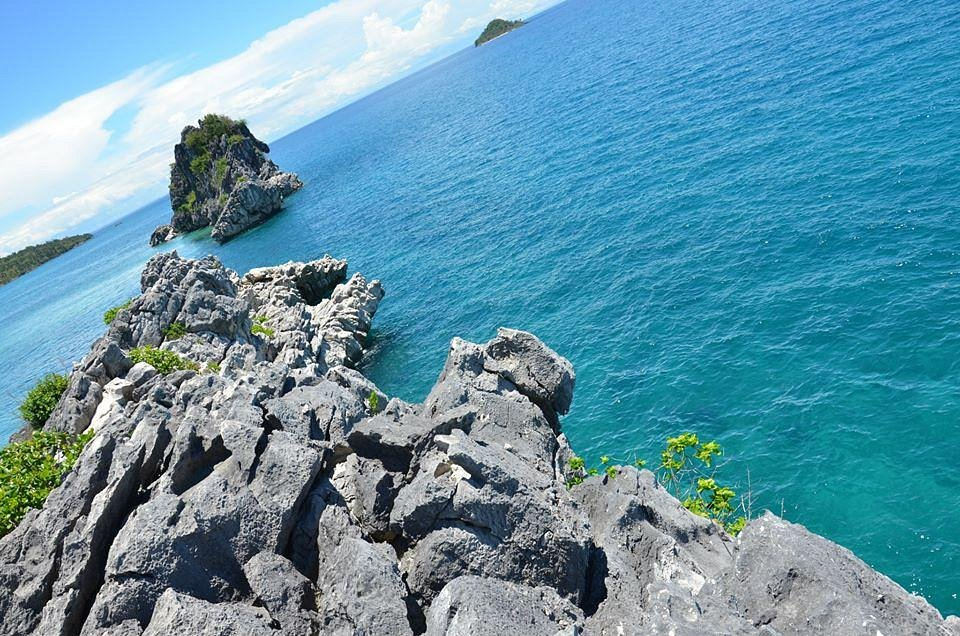
ISLANDS
ISLAND TOUR
TOUR & SIGHTSEEING
DAY TOUR
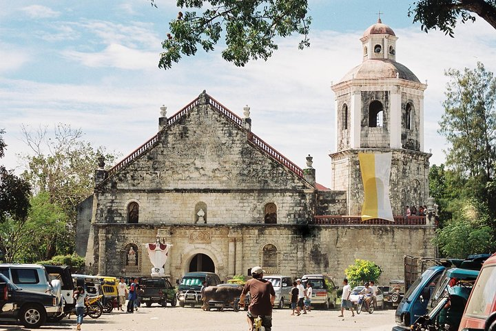
PRIVATE & CUSTOM TOURS
NIGHT TOUR
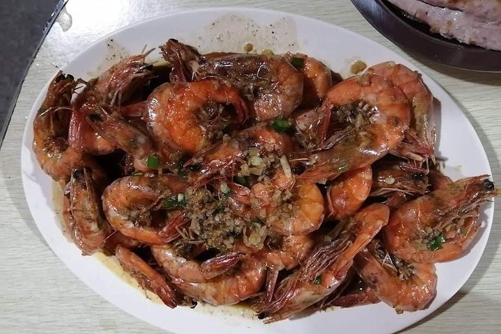
FOOD, WINDE & NIGHTLIFE
DAY TOUR
SEE OUR POPULAR SPORTS ACTIVITY & ATTRACTIONS
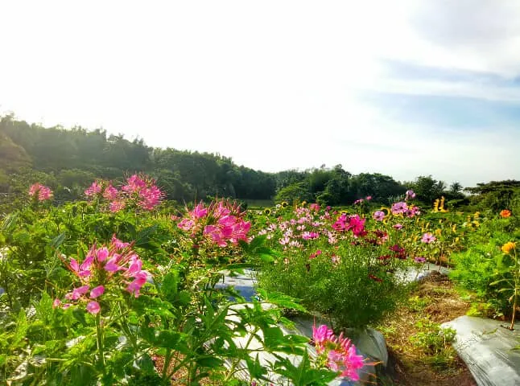
Bangeles Farm
Bangeles Farm grows a variety of lowland fruits and vegetables, which you can pick for keep during the harvest months.
Bulubadiangan Island
Another must-see Iloilo tourist destination for those who opt for less touristy options is Balubadiangan Island.
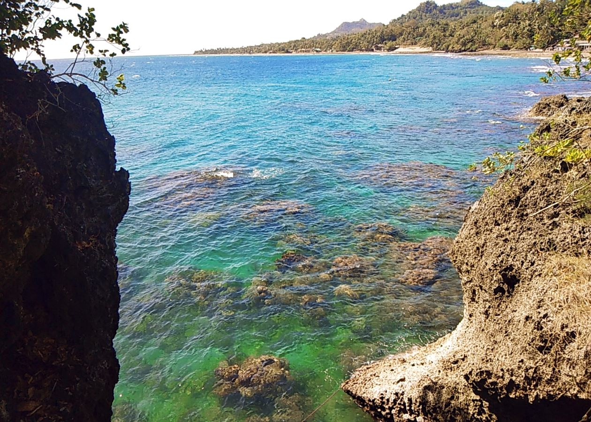
Kuliatan Marine Sanctuary
Unlike most islands in Iloilo, Kuliatan Marine Sanctuary has black banks, which are mostly made up of crushed corals.
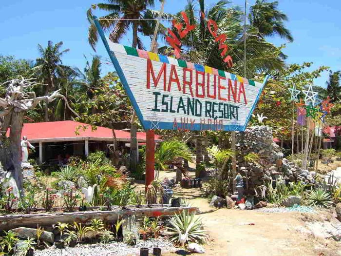
Marbuena Island
Marbuena Island is one of the famed Iloilo tourist spots though it is privately managed. It has a white beach with a stunning sandbar that stretches for about a hundred meters during low tide.
Agho Island
If you want to explore more of Iloilo’s hidden tourist spots, check out Agho Island. Enjoy running around its powdery white sands and splash your way to meet the waves on its turquoise waters.
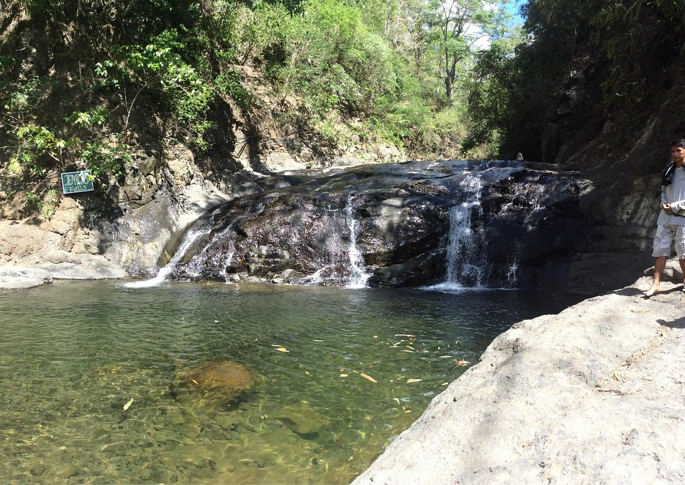
Imoy Falls
Imoy Falls is one of the emerging tourist spots in Iloilo. It features a naturally-built pool with crystal-clear waters. Locals love coming here to escape the simmering midday and enjoy the rustic surroundings
FESTIVALS IN ILOILO YOU CAN'T MISS
DINAGYANG FESTIVAL
The Dinagyang Festival is a cultural and religious festival that commemorates two events, the Feast of the Holy Child, and the pact between the native Ati and Malay settlers.
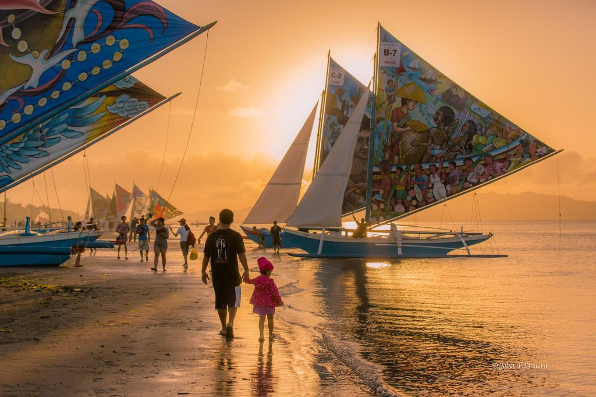
Paraw Regatta
The Malay settlers that eventually came to inhabit most of Panay Island had a seafaring lifestyle centered around “paraws,” sailboats characterized by colorful sails.
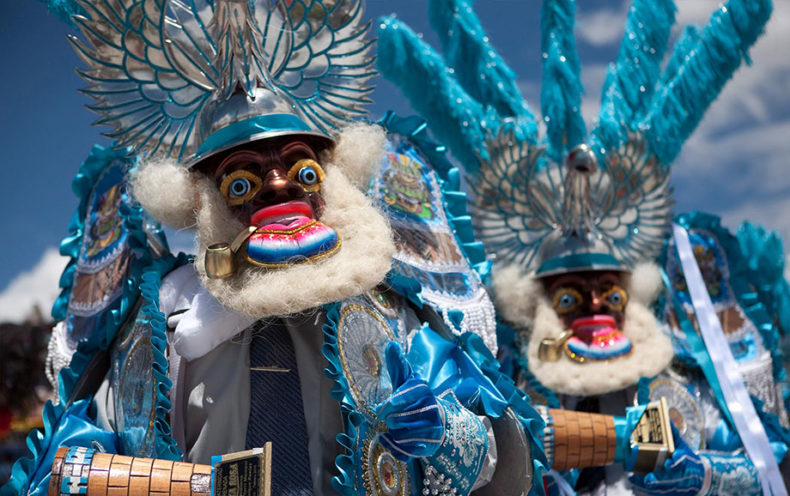
Fiesta de la Candelaria
Candelaria is the Jaro district’s interpretation of the Feast of the Presentation of Jesus Christ, also known as Candlemas./span>
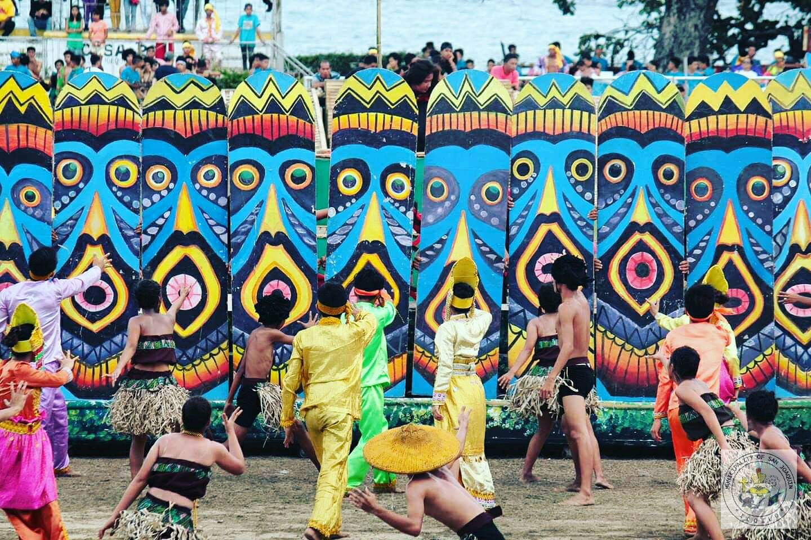
Bayluhay Festival
As with many other cities and municipalities throughout Panay, the Municipality of San Joaquin in Iloilo also has a celebration commemorating the contact between the Malay settlers and the Ati natives.
Binaog Festival
This Lambunao, Iloilo festival is yet another Panay festival that celebrates the Holy Child. However, it is distinguished by the showcasing of the Binanog dance of the Panay-Bukidnon ethnic community.
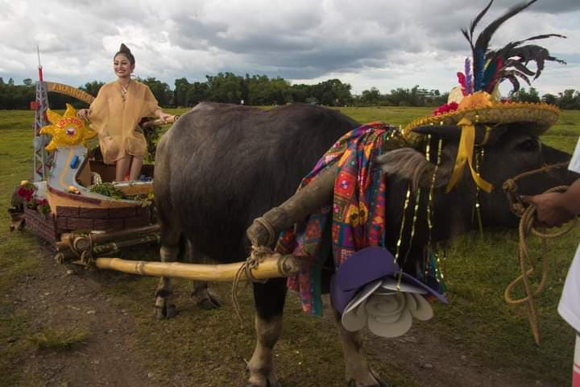
Carabao-Carroza Festival
Pavia’s Carabao-Carroza Festival was partly a reaction to the industrialization of farming in the early-to-mid 20th century.